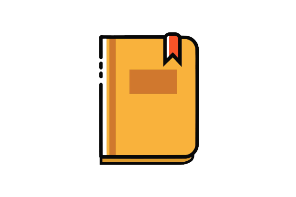
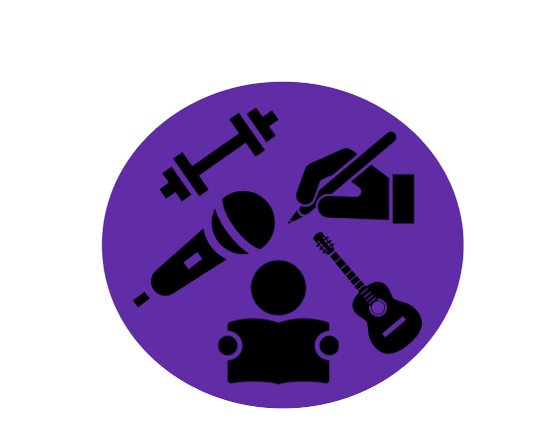
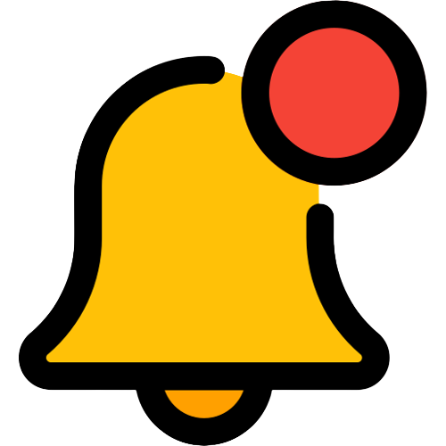
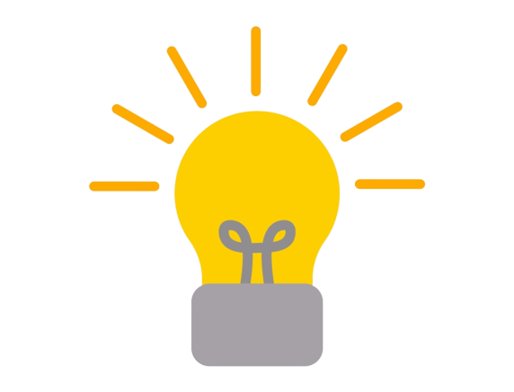

<ion-header [translucent]="true">
  <ion-toolbar>
    <!-- Display the title "Goal Minder" in the center of the toolbar -->
    <ion-title class="center-title">Goal Minder</ion-title>
  </ion-toolbar>
</ion-header>

<ion-content>
  <div class="icon-container">
    <!-- Clickable image representing the goals page -->
    

    <!-- Clickable image representing the activities page -->
    

    <!-- Clickable image representing the report page -->
    

    <!-- Clickable image representing the settings page -->
    
  </div>

  <!-- Display each selected hobby as an ion-item -->
  <ion-item [ngClass]="{'one-task': selectedHobbies.length === 1, 'two-tasks': selectedHobbies.length === 2, 'three-tasks': selectedHobbies.length === 3}" *ngFor="let hobby of selectedHobbies">
    <div class="cloud-container">
      <!-- Display a cloud image -->
      

      <!-- Display the hobby as a heading -->
      <h2>{{ hobby }}</h2>

      <!-- Display the first task related to the hobby -->
      <p>{{ getFirstTask(hobby) }}</p>

      <!-- Display a checkmark image to indicate completion of the task -->
      
    </div>
  </ion-item>

  <!-- Display the celebrating.gif when celebrating is true -->
  <div class="celebration-container" *ngIf="isCelebrating">
    
  </div>

  <!-- Button to display a random motivational quote -->
  <button (click)="displayRandomQuote()" style="background-color: transparent;">
    <div class="bellIcon"> 
      <!-- Display a bell icon image -->
      
    </div>
  </button>
  
  <!-- Display a motivational quote -->
  <div class="motivational-quote" *ngIf="displayQuote">
    <p>{{displayQuote}}</p>
  </div>

  <!-- Button to navigate to the information page -->
  <div class="info">
    <ion-icon name="information-circle" (click)="goToInfoPage()"></ion-icon>
  </div>

  <!-- Button to navigate to the tips page -->
  <div class="tips">
    
  </div>
</ion-content>
